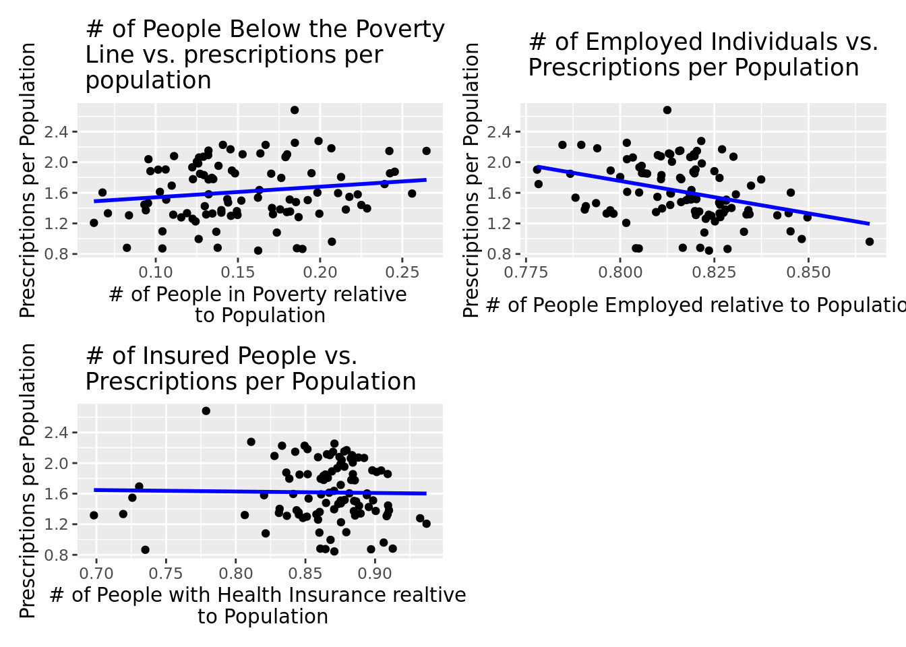

poverty_plot <-ggplot(census_summarized, aes(x = PovertyPercent, y = Prescriptions_Per_Population)) +geom_point() +geom_smooth(method ="lm", se =FALSE, color ="blue") +labs(title =" # of People Below the Poverty \n Line vs. prescriptions per \n population", x ="# of People in Poverty relative \n to Population ", y ="Prescriptions per Population") sexwork_plot <-ggplot(census_summarized, aes(x = EmployedPercent, y = Prescriptions_Per_Population)) +geom_point() +geom_smooth(method ="lm", se =FALSE, color ="blue") +labs(title =" # of Employed Individuals vs. \n Prescriptions per Population", x ="# of People Employed relative to Population", y ="Prescriptions per Population")insurance_plot <-ggplot(census_summarized, aes(x = InsuredPercent, y = Prescriptions_Per_Population)) +geom_point() +geom_smooth(method ="lm", se =FALSE, color ="blue") +labs(title =" # of Insured People vs. \n Prescriptions per Population", x ="# of People with Health Insurance realtive \n to Population", y ="Prescriptions per Population")arranged_plots <- poverty_plot + sexwork_plot + insurance_plot +plot_layout(ncol =2, byrow =TRUE)# Print the arranged plotsarranged_plots
`geom_smooth()` using formula = 'y ~ x'
`geom_smooth()` using formula = 'y ~ x'
`geom_smooth()` using formula = 'y ~ x'

drug_fit <-linear_reg() |>set_engine("glm") |>fit(Prescriptions_Per_Population ~ EmployedPercent + PovertyPercent + InsuredPercent, data = census_summarized, family ="binomial")tidy(drug_fit) |>kable(digits =7)